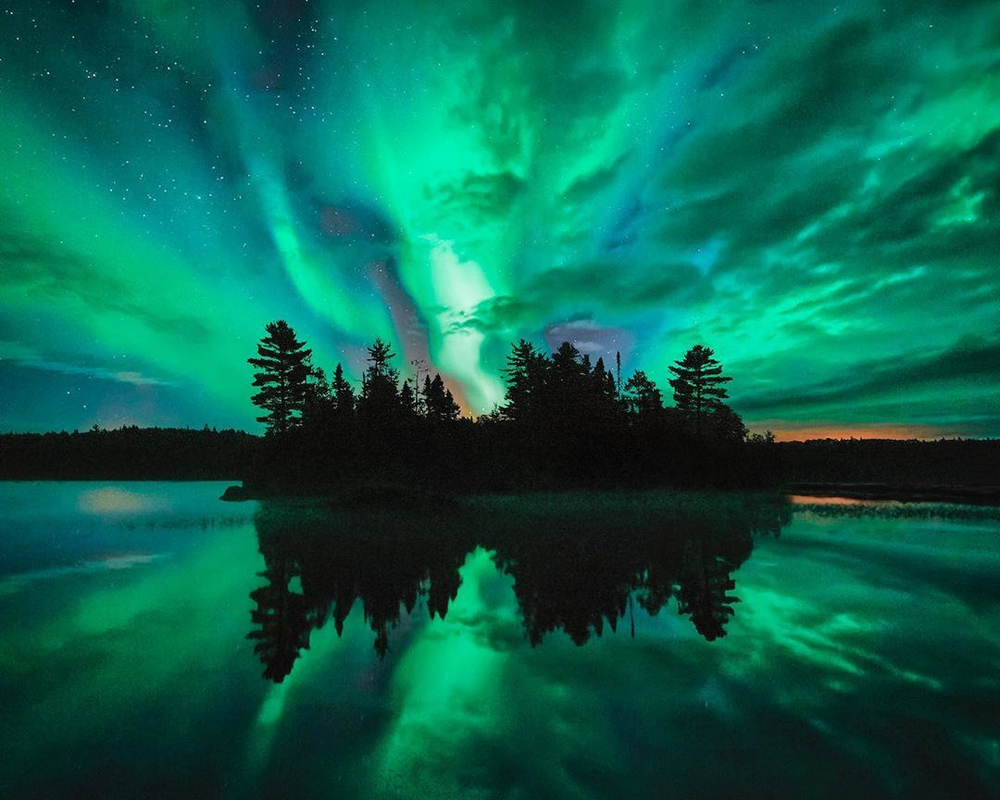

The Northern Lights
The Northern Lights is a special attraction that many don't even know Minnesota has to offer. Unlike other states that have northern lights displays, because of Minnesota's 10,000+ lakes there are many ideal spots to be able to view them. Given that the Canadian border and northeastern region is far from the more polluted areas of Minnesota's urban hubs such as Minneapolis and Saint Paul, it also leaves the sky vastly undisturbed to be able to create one of nature's most fascinating and beautiful phenomenons! Below we will again provide several ideal places where you have the best probability of seeing the lights occur however we will note that it is known to have been seen in not just the northern but also mid and southern regions of the state.
- Gunflint Trail on Lake Superior
- One of the many lakes in Voyageurs National Park
- Lake of the Woods
- Boundary Waters Canoe Area Wilderness
- The Northwest Angle
- Beaver Bay
- Hawk Ridge, Duluth
Minneapolis, MN 55455
612-555-5555